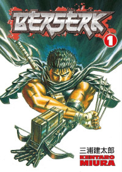
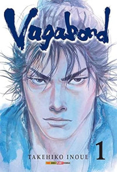
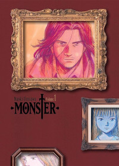

GOAT MANGÁS
Berserk
Berserk (ベルセルク) é uma série de mangá escrita e ilustrada por Kentaro Miura. Situada em um mundo de fantasia sombria medieval inspirado na Europa, a história gira em torno dos personagens Guts, um mercenário solitário, e Griffith, o líder de um bando de mercenários chamados de Bando do Falcão. Temas como isolamento, camaradagem, e a questão de se a humanidade é fundamentalmente boa ou má permeiam a história, enquanto ela explora o melhor e o pior da natureza humana. Tanto o mangá como as animações são conhecidos por sua violência pesada.
Vagabond
Vagabond(バガボンド) é um mangá de gênero ação criado por Takehiko Inoue em 1998, e conta a história de Miyamoto Musashi, provavelmente um dos espadachins mais bem-sucedidos da história do Japão, se inspirando no livro “Musashi” de Eiji Yoshikawa.
Monster
Monster (モンスター Monsutā, também referido como "Naoki Urasawa's Monster"?) é uma série de mangá japonesa escrita e ilustrada por Naoki Urasawa. Foi publicada pela Shogakukan na revista Big Comic Original entre 1994 e 2001, com os capítulos sendo compilados em 18 volumes encadernados. A trama gira em torno de Kenzo Tenma, um cirurgião japonês que vive na Alemanha cuja vida é abalada após se ver no caminho de Johan Liebert, um de seus ex-pacientes, que se revela um serial-killer psicótico.